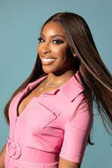

(1).png)
This post will serve to highlight the current relationship between African Americans and Tech. As Ive mentioned previously I love the welcoming, homey, supportive feeling I get when I think about my career so far in tech. Many of the professional developers and industry professionals that I have met have been surprisingly, friendly, helpful, often offering a comraderary rarely found in any other competitive industry and as I began to take a closer look into the relationship between African Americans and the Tech industry I began to understand why.
African Americans have made significant contributions to the field of computer programming. Despite facing discrimination and barriers to education and employment opportunities, pioneers such as Mark Dean, who co-invented the personal computer, and Katherine Johnson, who calculated trajectories for NASA's space missions, have paved the way for future generations. Today, African Americans continue to make strides in the industry, with individuals like Kimberly Bryant founding organizations like Black Girls Code to empower young girls of color to pursue careers in tech. Their contributions have not only advanced the field of computer programming, but also helped to increase diversity and representation within the industry. However there is still much to be done to address issues of diversiy, rascism, inequality and fair treatment within the Tech industry for African Americans and others.
According to an article by Sarah K. White on cio.com
Between 2014 and 2021, the tech industry only increased black representation by 1%, according to data from the Kapor Center. Black workers are also paid 4% less than their peers and often hired into lower-level roles than they are qualified for. Black tech talent represents only 4.4% of board roles, 3.7% of technical roles, and 4% of executive leadership.
1
Unrepresented minority groups in the tech industry include Adrican Americans, Latino and Hispanics, Native Americans and women. These groups are called unrepresented because the number of people identifying as a part of these groups is signifigantly less than those who do not. Those who do not include people who identify as white (who make up 67% of the tech industry) and Asian (who currently make up 20% of the tech industry). That leaves just 13% to be divided among the rest of us.
2
To put this is perspective, "Black Americans make up 8.8% of Google’s workforce, 3.9% of Facebook’s, and 4.9% of Microsoft’s. While these companies are trying to diversify their hires, progress has been slow: From 2014 to 2019, Google only increased the number of its Black and Hispanic or Latino employees by less than 1%. More specifically last year, 42.8% of the people hired at Google in 2021 were Asian, 8.8% were Black, 8.8% were Latinx, and 0.7% were Native American.
3
Despite making signifigant contributions to the Tech industry since it's inception, blacks are still underrepresented in the field, with only 5% of tech professionals identifying as African American. The lack of representation can be attributed to systemic barriers to entry such as lack of access to education and mentorship, background and entry requirements and lack of access and transportation to the cities, hubs and locations where Tech companies can be found.
4
Efforts to increase diversity in tech have increased, such as an increase in apprentiship and internship roles, increased funding for schoalorship and education and the TechHire initiative launched by the Obama administration . The lack of diversity in tech has negative effects on the products and services created, as they are not always inclusive or representative of all users. As the tech industry continues to grow and evolve, it is important to address the lack of diversity and ensure that all voices are heard and represented.
5
Even after landing a job with a tech company many African Americans have reported bullying and consistent unfair treatment in the workplace. In a 2022 report, State of Tech Diversity: The Black Tech Ecosystem, the Kapor Center found that nearly half of all Black technologists reported experiencing racial inequity in hiring, promotion, leadership opportunities, and salaries and benefits. This results in lass time black tech talent is spending in their roles and higher turnover. A study from The Kapor Center for Social Impact and The Ford Foundation found unfair treatment to be the top driver of employee turnover, in particular for employees from underrepresented groups. More than one in three Black participants in the 2017 survey said they left a job or company due to unfairness within the past year.
https://www.cio.com/article/304911/5-revealing-statistics-about-career-challenges-black-it-pros-face
6
Many companies lack African Americans representation in upper management and/or leadership roles. Having diverse representation at the top levels of any organization means that everyone has a voice and that a multitude of perspectives contribute to making fair decisions and changes for everyone. According to a report from McKinsey and Company, at the current rate of hiring and promotion in the Tech Industry, "it will take 95 years for Black employees to reach “talent parity” (12% representation) in the private sector."
https://www.cio.com/article/304911/5-revealing-statistics-about-career-challenges-black-it-pros-face7
Although it seems like pretty much everyone is aware the problem exsists, companies and leaders are not doing enough to change the status quo. Although many opportunities have begun to emerge for education in the form of schoalorships and apprentiships, it isn't enough,learning and education are only part of the problem. Hiring quotas and the push to show black representation within their companies isn't really working either because once they are hired black talent often finds after landing roles in tech that a fair playing field still does not exsist. Most blacks currently working in tech report a lack of opportunity to progress and achieve recognition and/or promotion in their careers with 29% reporting that they are happy with the opportunities presented to them in their careers to date, compared to 52% of non-Black tech professionals with the same level of experience.
In comparison:
8
It makes sense. If your never given the chance to learn and grow within the position that you have been hired for then you will never stand out or be considered for upcoming opportunities to do the same. Black developers recognize this as one of the major roadblocks in today's workplace, standing in between them and the succuss and recognition they desire. Nearly 90% of non-Black tech professionals with more than 20 years of experience have led “major company initiatives,” whereas only 61% of Black tech professionals with the same amount of experience can say the same. And nearly 25% of Black tech professionals with extensive experience in the industry do not feel they will have the chance to lead a major company initiative, whereas only 7% of their non-Black counterparts said the same.
https://www.cio.com/article/304911/5-revealing-statistics-about-career-challenges-black-it-pros-face9
As an industry that is supposedly so progressive and that many look to as a model for future industries, the tech industry is without doubt failing at doing its part in hiring, diversifying, promoting and celebrating black talent.
Compared to industries in the US in general, the high-tech industry employs:"
In contrast the high-tech industry when compared to other industries in the US in general is employing:
It is more than safe to say that I was very dissappointed to discover these facts.To say the least. Looking over the numbers in black and white it is hard to deny that the industry is not necessarily operating in the way that it portrays itself to be. Then again, who isn't. A part of me (the naive and forgiving part) feels that everyone does this to some extent throught the day and as long as they are striving to improve and become the inclusive and progressive industry they want us to believe that they are then there is hope. Change and progress are slow and historically have only been made to travel faster through hard work, standing up for whats right, speaking out against wrong doing and exemplifying the change that we want to see and so, in conclusion, it means that there is still much work to be done.
Technology and Software
With over 3M views on TikTok and on his YouTube channel, Marquees is known for his reviews and instructional videos on mobile, digital tech and software.
Lifestyle and Entrepreneuership
Dayna is the Director of Creative Media at Bolden and an entreprenuerial blogger and influencer. Her lifestyle TikTok channel shares tips for entrpreneurs on being succussful and maximizing your potential
Beauty, Skincare and Lifestyle

Tiara is a beauty and lifestyle influencer on instagram and twitter. She focuses on beauty and skincare for women of color and also shares entreprenuerial tips for bloggers and others looking to learn more about building an audience, content monetization and giving back to community.
Beauty and Entrepreneurship
Shontay Lundy is the founder of one of my new favorite beauty products, Black Girl Sunscreen. I love the idea and the sunscreen is amazing. Shontay has built her brand into a multi-million dollar business and her products can be found on the shelves of Target, Ulta and CVS. She shares inspirational and entreprenuerial content with her followers.
Finance, Travel and Business
Cinneah E is a Project Manager at Paypal and the creator of Flynanced. She wears many different hats and shares tips on everything from money management to travel but I value the career and job search information she shares the most.
Beauty, Fashion and Lifestyle
Jackie is an instagram beauty influencer with 1.8M followers. She is also a social influencer who advocates for visibility of people of color in the cosmetic industry.
Business, Community and Social Justice
Jahmal is the Founder and CEO of My Block, My Hood, My City and an advocate for social justice. His mission is to build a more interconnected Chicago on the pillars of service and education.
Activism, Social Justice and Anti-racism

Host of the Changemaker podcast, activist, educator and DEI Advocate Marie is a modern activist empowering and inspiring millions with her messages about racial equality, social justice and unity.
Lifestyle, Marketing, Culture and Community
Eunique Jones Gibson is the founder and publisher of Because of Them We Can™, CEO of Culture Brands a photographer, an author and an activist. She created the "Because of Them, We Can™" a 28 day photo campaign that tells the stories of black heros in a way that children can relate.